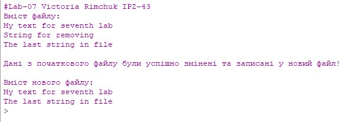

Лабораторна робота №7
Тема: Обробка рядків та файлів мовами функціонального програмування
Завдання:
Записати в текстовий файл n рядків тексту, що задаються програмою на функціональній мові програмування. Зчитати рядки із створеного програмою файлу, вивести їх на екран. Видалити в початковому тексті рядок, згідно до заданого словника. Записати в новий текстовий файл результат обробки тексту
Опис алгоритму для завдання:
1. Створюємо функцію для запису даних у файл
2. Створюємо функцію для читання нових рядків із файла
3. Записуємо дані у файл
4. Читаємо дані з файла
5. Видаляємо рядок із файла згідно заданого шаблону
6. Записуємо модифіковані дані у новий файл
Структура програми (HIPPO діаграма):
Обгрунтування вибору середовища та мови
В якості середовища було обрано DrRacket версії 8.2 та мова Racket
Вибір середовища та мови був зумовлений наступним:
Код програми:
; Запис даних у файл
(define (writeDataToFile data file) (display-lines-to-file data file #:exists 'replace #:mode 'text))
; Читання нових рядкв з файла
(define (nextLine file)
(let ((line (read-line file 'any)))
(if (eof-object? line)
'()
(begin(displayln line)
(append (list line) (nextLine file)))
)
)
)
(define path "D:\\IPZ-43\\Funstional-prog\\Racket-scripts\\")
(define words (list
"My text for seventh lab"
"String for removing"
"The last string in file"
)
)
(display "#Lab-07 Victoria Rimchuk IPZ-43")
; Запис даних
(writeDataToFile words ( string-append path "input.txt"))
(display "\nВміст файлу:\n")
; Читання даних
(define readData (call-with-input-file ( string-append path
"input.txt") nextLine))
; Видалення із файлу за заданим шаблоном
(define removeData(
remove "String for removing" (list
"My text for seventh lab"
"String for removing"
"The last string in file"
)))
; Запис модифікованих даних в новий файл, та виведення їх на екран
(writeDataToFile removeData (string-append path "output.txt"))
(display "\nДані з початкового файлу були успішно змінені та записані у новий файл!")
(newline)
(display "\nВміст нового файлу: ")
(newline)
(define rm-data (call-with-input-file ( string-append path "output.txt")
nextLine))
Скріншот результатів:
Аналіз достовірності результатів:
Для даного завдання перевірку на достовірність було проведено за допомогою візуальної оцінки вмісту файлів. На мою думку, дане завдання не потребує додаткових перевірок на достовірність.
Висновки:
В ході виконання даної лабораторної роботи було опановано теоретичні основи обробки рядків та текстових файлів мовами функціонального програмування та реалізовано програму базуючись на опанованих теоретичних основах
В ході виконання даної лабораторної роботи виникли проблеми з реалізацією словника для видалення з файлу. Виходячи з цього, було реалізовано видалення з файлу рядка за вкааним шаблоном